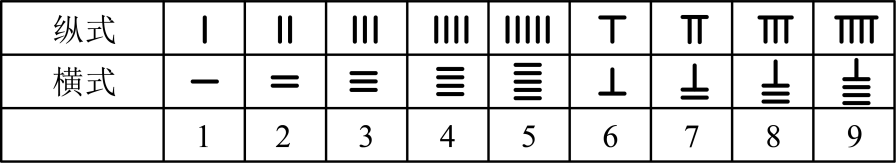
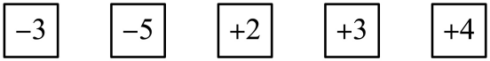
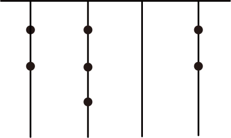

第二章 有理数及其运算·培优卷
【北师大版2024】
考试时间：120分钟 满分：120分
姓名：___________班级：___________考号：___________
考卷信息：
本卷试题共24题，单选10题，填空6题，解答8题，满分120分，限时120分钟，本卷题型针对性较高，覆盖面广，选题有深度，可衡量学生掌握本章内容的具体情况！
第Ⅰ卷
一．选择题（共10小题，满分30分，每小题3分）
1．（3分）（24-25七年级下·河北秦皇岛·期末）第33届夏季奥林匹克运动会于2024年7月26日至8月11日在法国巴黎举行．据中国视听大数据（CVB）统计，在此期间，全国卫视共播出近5000期奥运相关节目，累计观看人次达159.9亿，将159.9亿用科学记数法表示为（ ）
A．0.1599×1011 B．1.599×1010 C．1.599×109 D．15.99×109
2．（3分）（2025·吉林松原·模拟预测）若−3×□的运算结果为正数，则□内的数字可以为（ ）
A．−1 B．0 C．1 D．2
3．（3分）（2021·河北石家庄·一模）若a为整数，则a23表示的是（ ）
A．3个a2相乘 B．2个a3相加 C．3个a2相加 D．5个a相乘
4．（3分）（2025·山西晋城·三模）如图，这是某机器零件的设计图纸.下列长度（L）的零件合格的是（ ）

A．39.2mm B．39.6mm C．39.9mm D．40.5mm
5．（3分）（2025·吉林长春·二模）把−2−+3−−4写成省略加号的和的形式，正确的是（ ）
A．−2+3+4 B．−2−3+4 C．−2−3−4 D．−2+3−4
6．（3分）（24-25七年级上·山西太原·阶段练习）李双、李见是一对爱学习、进取心强的姐妹，学完第一章《有理数》后，李双对李见说：“a是最小的正整数，b是最大的负整数，c是绝对值最小的数，d是倒数等于自身的有理数，你说a−b+c−d等于多少？”李见脱口答出正确答案，聪明的你知道答案是多少吗？（ ）
A．1 B．3 C．1或3 D．2或−1
7．（3分）（23-24七年级下·北京·阶段练习）以下的运算的结果中，最大的一个数是（ ）
A．−13579+0.2468 B．−13579+12468
C．(−13579)×12468 D．(−13579)÷12468
8．（3分）（2025·河北邯郸·二模）如图，数轴上有三个点A，B，C，其中C是线段AB的中点，则原点O的位置（ ）
A．位于线段AC上，且靠近A点 B．位于线段AC上，且靠近C点
C．位于线段BC上，且靠近B点 D．位于线段BC上，且靠近C点
9．（3分）（24-25七年级下·云南文山·期末）中国古代著作《九章算术》在世界数学史上首次正式引入负数，如果将“收入100元记作+100元”，那么“支出80元”应记作（ ）
A．+80元 B．−80元 C．+100元 D．−100元
10．（3分）（2025·河北邯郸·二模）−3与−−3的关系是（ ）
A．相等 B．互为相反数 C．互为倒数 D．积为−9
二．填空题（共6小题，满分18分，每小题3分）
11．（3分）（2025·云南楚雄·模拟预测）如图，已知数轴上点A表示的数是2024，且OA=OB，则点B表示的数是 ．
12．（3分）（2025·湖北十堰·三模）珠穆朗玛峰海拔约8849米，吐鲁番盆地最低处海拔约为−155米，两地的相对高度（即山峰最高处比盆地最低处高）是 米．
13．（3分）（24-25七年级上·山东威海·期末）如图，按程序框图中的顺序计算，当输入的初始值x为32时，则输出的最后结果为 ．

14．（3分）（2025·四川资阳·模拟预测）在−22,−4,(−1)2011,π,511,−(−13)3,3.1415,0，数中，其中整数有m个，非负数有n个，即m−n= ．
15．（3分）（2025·江西吉安·一模）如下表所示，算筹是我国古代的计算工具之一，摆法有纵式和横式两种，横式和纵式都可以表示同一个数，古人在个位数上划上斜线以表示负数．如“ ”表示−723，则“
”表示−723，则“ ”所表示的数是 ．
”所表示的数是 ．

16．（3分）（24-25七年级上·江苏常州·期末）如图，图书馆、小明家、社区服务中心和超市在同一条笔直的马路上．若小明家位于图书馆和超市连线段上靠近图书馆的三等分点处，则社区服务中心和超市的距离为 m．

第Ⅱ卷
三．解答题（共8小题，满分72分）
17．（6分）（24-25七年级上·湖北恩施·阶段练习）计算：
(1)−8+10+2+−1；
(2)−−22+−23×5−−28÷4
18．（6分）（23-24七年级上·江苏扬州·阶段练习）已知x2=64，y=9，
(1)求x和y的值；
(2)若x>y，求x−y的值．
19．（8分）（24-25六年级上·山东威海·期末）数学老师布置了一道思考题“计算：−112÷13−56”，小明用了一种不同的方法解决了这个问题，他认为原式的倒数为13−56÷−112=13−56×(−12)=−4+10=6，所以−112÷13−56=16．
请你运用小明的解法计算：−130÷15+13−115．
20．（8分）（24-25七年级上·江苏泰州·阶段练习）对有理数a、b定义运算∗如下：a∗b=a+2b−3．
(1)计算4∗−3=______；
(2)求−5∗−2∗6的值．
21．（10分）（22-23七年级上·江苏无锡·阶段练习）如图，小明有5张写着不同的数字的卡片，请你按要求取出卡片，完成下列问题：

(1)从中取出2张卡片，使这2张卡片上数字乘积最大，最大值是 ；
(2)从中取出2张卡片，使这2张卡片上数字相除的商最小，最小值是 ；
(3)从中取出4张卡片，用学过的运算方法，写出一个运算式使结果为24．
22．（10分）（24-25七年级上·江苏泰州·阶段练习）某粮库6天内的粮食进出库的吨数为：+23，−32，−15，+34，−36，−20．问：
(1)经过这6天，库里的粮食是增多了多少？还是减少了多少？
(2)经过这6天，仓库管理员发现库里还存有520吨粮食，那么6天前库里存粮多少吨？
(3)如果进出的装卸费都是每吨5元，那么这6天需要多少装卸费？
23．（12分）（23-24七年级上·山东潍坊·期中）十进制是用0～9这十个数字来表示数，满十进一，例：212=2×102+1×10+2；计算机常用二进制来表示字符代码，它是用0和1两个数来表示数，满二进一，例：二进制数10000转化为十进制数：1×24+0×23+0×22+0×21+0=16；其他进制也有类似的算法．

(1)根据以上信息，将二进制数“101110”转化为十进制数．
(2)中国古代《易经》一书中记载，人们通过在绳子上打结来记录数量，即“结绳记数”．如图，一位妇女在从右到左依次排列的绳子上打结，满六进一，用来记录采集到的野果数量．根据图，计算采集到的野果数量．
24．（12分）（24-25七年级上·重庆秀山·期末）2024年11月7日，恰逢立冬，又遇我县第一届运动会，更是我县41岁“生日”．为保证运动会顺利进行，全县人民高度重视并积极参与．某出租车驾驶员无偿为各能量补给站运送物资，他从物资配送站出发，在东西向的站前大道上连续接送6批物资，行驶路程记录如下（规定向东为正，向西为负，单位：km）：
第1批 | 第2批 | 第3批 | 第4批 | 第5批 | 第6批 |
4km | −7km | −3km | 6km | −9km | 5km |
(1)接送完第6批物资后，该驾驶员在物资配送站什么方向，距离物资配送站多少千米？
(2)若该出租车每千米耗油0．6升，那么在这个过程中共耗油多少升？